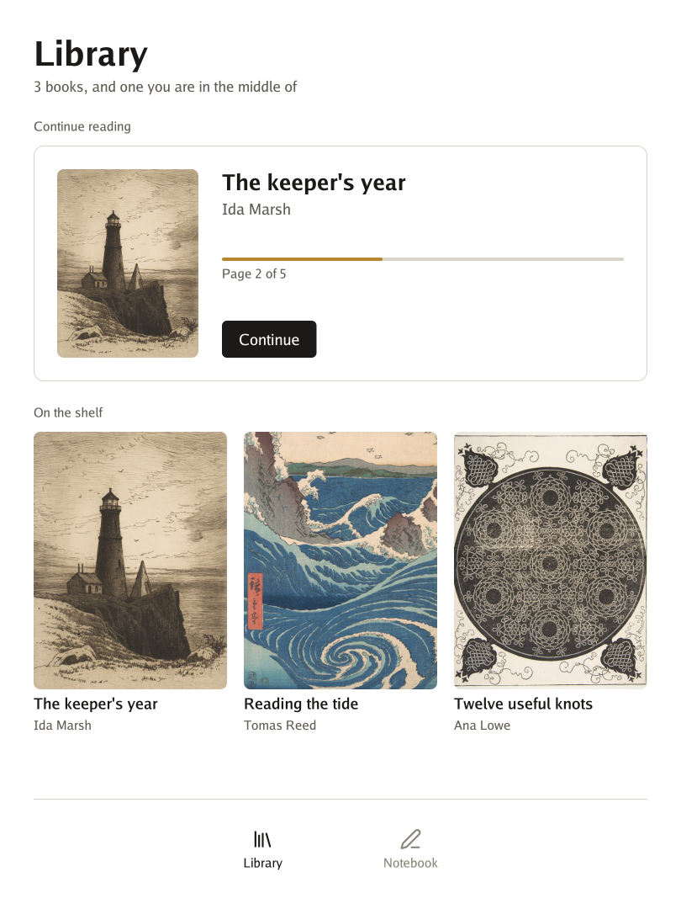

Go for reMarkable runs Go programs on the reMarkable Paper Pro: an interface on paper that stays still until you touch it, ink that follows the pen, and a screen that turns with the tablet.

It is the tablet’s side of the family: the program’s loop, the pen and the fingers, and the tools that put a program on the tablet. Go UI builds the interface and Go Renderer turns it into shapes. An e-ink panel has no graphics chip to speak of, so here the shapes are blended by the processor, and only the pixels that changed reach the panel.
🚧 An experiment. What was checked says exactly what ran on a real tablet.
Pick the line that sounds like you.
| If you… | Read | Time |
|---|---|---|
| are new and want a program on the tablet | 📜 The quest: from words on paper to your own program, in 5 levels | 45 min |
| want to know what each package does and what you need | What is where | 10 min |
| plan a larger program | Before writing a larger program | 5 min |
The menu on the left (or the files in docs/) follows this order.
Start
See what is where.
| Word | What it means |
|---|---|
| Go | A programming language. To try these projects you install it once, from go.dev. |
| Terminal | The window where you type commands: Terminal on macOS and Linux, PowerShell on Windows. |
| Developer mode | A setting of the tablet that lets you open a terminal on it over USB, with SSH. |
| xovi | A tool that adds extensions to the tablet’s own program. It stays off until you start it, and a restart turns it off again. |
| AppLoad | The xovi extension that lists and opens programs like these. |
| E-ink | A screen of tiny capsules that keeps its picture with no power, and pays for every change. |
| Refresh | The moment the panel changes its capsules. Fast ones leave a ghost of the old picture; clean ones take longer. |
| Quest | The tutorial of these docs: short levels, each ending with something that works and an achievement. |
Go for reMarkable is one of a family of small projects that work together:
| Project | What it does |
|---|---|
| Go Renderer | draws 3D scenes and flat interfaces |
| Go UI | buttons, panels and whole applications |
| Go UI for Android | Android apps that look like Android’s own |
| Go Sound | sound and music |
| Go Scene Builder | 3D scenes from a flat map |
| Go Simulator | simulations that change a scene |
| Go Terrain Simulator | ground shaped by rivers |
| Go Climate Simulator | weather and biomes |
| Go Flora Simulator | forests that grow |
| Go Urban Simulator | towns that grow |
| Go Motion Simulator | a scene that moves |
| Go for 3DS | Go on the Nintendo 3DS |
| Go for Meta Quest | Go on the Meta Quest 3 |
| Go for reMarkable (this one) | Go on the reMarkable Paper Pro |
⚠️ All of them are educational experiments, written with an AI assistant and pending review by their author: good for learning and playing, not for production.